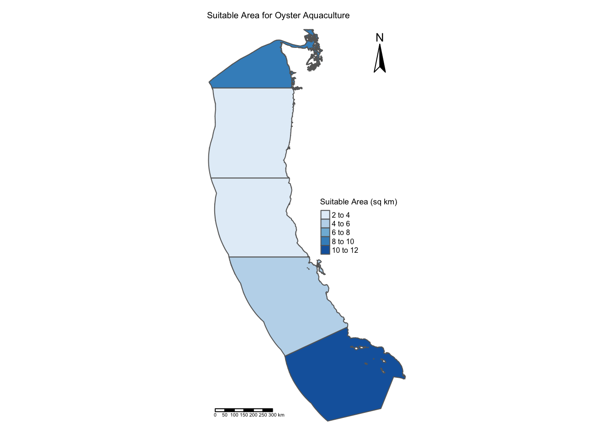
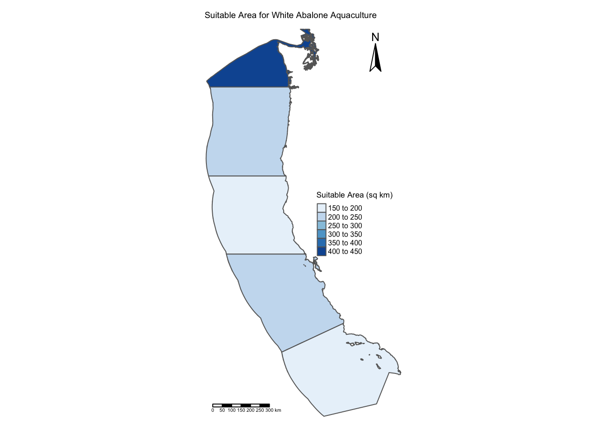

Code
library(here)
library(tmap)
library(stars)
library(terra)
library(tidyverse)Prioritizing Potential Aquaculture
library(here)
library(tmap)
library(stars)
library(terra)
library(tidyverse)# West Coast EEZ shapefile
wc_eez <- st_read(here("data", "wc_regions_clean.shp"))
# Bathymetry raster
bathymetry <- rast(here("data", "depth.tif"))
# SST rasters
sst_08 <- rast(here("data", "average_annual_sst_2008.tif"))
sst_09 <- rast(here("data", "average_annual_sst_2009.tif"))
sst_10 <- rast(here("data", "average_annual_sst_2010.tif"))
sst_11 <- rast(here("data", "average_annual_sst_2011.tif"))
sst_12 <- rast(here("data", "average_annual_sst_2012.tif"))
# Raster stack
sst_stack <- c(sst_08, sst_09, sst_10, sst_11, sst_12)All coordinate reference systems are updated and match!# Calculate the mean of the stacked raster
mean_sst <- mean(sst_stack, na.rm = TRUE)
# Convert to celsius
mean_sst_celsius <- mean_sst - 273.15
# Crop the depth raster to match SST extent
depth_cropped <- crop(bathymetry, mean_sst_celsius)
# Resample depth raster to match SST resolution
depth_resampled <- resample(depth_cropped, mean_sst_celsius, method = "near")Resolution, extent, and coordinate reference system match!# Function to generalize the workflow for any species
identify_suitable_areas <- function(suitable_sst_min, suitable_sst_max, suitable_depth_min, suitable_depth_max, species_name) {
# Reclassify SST: 1 for suitable, 0 for unsuitable
sst_suitability <- classify(mean_sst_celsius,
rcl = matrix(c(-Inf, suitable_sst_min, 0,
suitable_sst_min, suitable_sst_max, 1,
suitable_sst_max, Inf, 0),
ncol = 3, byrow = TRUE))
# Reclassify Depth: 1 for suitable, 0 for unsuitable
depth_suitability <- classify(depth_resampled,
rcl = matrix(c(-Inf, suitable_depth_min, 0,
suitable_depth_min, suitable_depth_max, 1,
suitable_depth_max, Inf, 0),
ncol = 3, byrow = TRUE))
# Find suitable locations
suitable_area <- sst_suitability * depth_suitability
# Mask the suitable area by EEZ boundaries
suitable_area_eez <- mask(suitable_area, wc_eez)
# Extract the total suitable area per EEZ
suitable_area_per_eez <- terra::extract(suitable_area_eez, wc_eez, fun = sum, na.rm = TRUE)
# Add the result to the EEZ shapefile
wc_eez$suitable_area <- suitable_area_per_eez[, 2]
# Visualize the suitable area within each EEZ
tm_shape(wc_eez) +
tm_borders() +
tm_fill("suitable_area",
palette = "Blues",
title = "Suitable Area (sq km)") +
tm_layout(main.title = paste("Suitable Area for", species_name, "Aquaculture"),
main.title.size = 0.6,
frame = FALSE,
legend.position = c("right", "center"),
legend.title.size = 0.8,
legend.text.size = 0.5) +
tm_compass(position = c("right", "top")) +
tm_scale_bar(position = "left")
}# Oyster conditions
identify_suitable_areas(suitable_sst_min = 11,
suitable_sst_max = 30,
suitable_depth_min = 0,
suitable_depth_max = 70,
species_name = "Oyster")
# White Abalone conditions
identify_suitable_areas(suitable_sst_min = 10,
suitable_sst_max = 20,
suitable_depth_min = -65,
suitable_depth_max = -6,
species_name = "White Abalone")
| Data | Citation | Link |
|---|---|---|
| Bathymetry | General Bathymetric Chart of the Oceans. (n.d.). Gridded bathymetry data (general bathymetric chart of the oceans). GEBCO. | https://www.gebco.net/data_and_products/gridded_bathymetry_data/#area |
| Exclusive Economic Zones | Marine regions. (n.d.). | https://www.marineregions.org/eez.php |
| Sea Surface Temperature | Watch, N. C. R. (n.d.). NOAA Coral Reef Watch Daily 5km satellite coral bleaching heat stress SST anomaly product (version 3.1). | https://coralreefwatch.noaa.gov/product/5km/index_5km_ssta.php |